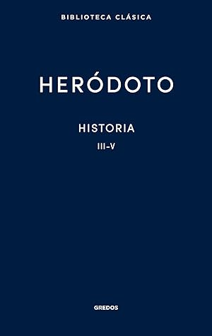

Historia. Libros III-V
Reseña por Jorge I. Zuluaga

Ver reseña en GoodReads (necesita cuenta)
Después de leer los Libros I y II (aquí mi reseña) y de que de alguna manera pasará el momento de la novedad y la admiración que producen esos dos primeros libros, especialmente el segundo que está dedicado en su mayoría al antiguo Egipto, un tema que produce mucha curiosidad, después de esa "luna de miel" con la Historia de Heródoto, se enfrenta uno a la realidad menos amable de un libro escrito hace casi 2500 años.
En estos 3 libros, Heródoto se concentra en describir la geografía e historia de los pueblos que rodean la zona de influencia del imperio Persa, en especial los denominados escitas (libro 3), los pueblos de las estepas asiáticas y el norte y centro de Europa, los libios (libro 4) y los distintos pueblos griegos (libro 5).
He terminado por aprender después de 5 libros que "Historia" es una obra sobre el surgimiento y contexto geográfico del poderoso imperio Persa. Se que podría haberlo leído en una página de Wikipedia o en uno de los innumerables artículos que resumen y analizan la obra y que pululan en las redes; pero no me gusta leer spoilers y prefiero descubrir por mi cuenta de que van las cosas que leer.
Por esto mismo, no puedo dejar de manifestar mi decepción al descubrir que, contrario a mis expectativas iniciales, que Heródoto en realidad narra en estos libros solo una pequeña parte de la Historia de los pueblos de Europa, del oriente próximo y del norte de Africa.
Mis prejuicios modernos me hicieron esperar un libro dedicado a una Historia general de la antigüedad, incluyendo muchas naciones, conflictos y regiones geográficas; y, aunque algunas descripciones son realmente amplias, la mayoría en realidad se concentran en lo que paso a los Persas y a los griegos en un par de siglos entre el surgimiento del imperio Persa y sus repetidos conflictos con los griegos.
Aún así, sigo pensando que es bueno leerlo en su totalidad. Y es que hace falta conocer de primera mano la obra de Heródoto para entender las citas que en muchos otros libros de Historia se hacen de él.
También es cierto que la descripción de muchos de los lugares y las costumbres que aparecen en estos libros, en especial las de de culturas y pueblos desaparecidos, pueden resultar realmente interesantes.
Me llamo particularmente la atención, por ejemplo, la descripción de los esfuerzos que hicieron distintos pueblos del oriente próximo por circunnavegar Africa. Estas son historias que había leído en otros libros como historias de segunda mano, pero que están descritas con algún grado de detalle en el libro IV de Heródoto. La satisfacción y el placer de leerlas directamente de la fuente, el mismísimo Heródoto, es simplemente genial.
En síntesis. Leer a Heródoto no es una tarea agradable. No es como leer muchos de los libros que reseñamos en esta red. No es una tarea que le recomendaría a muchos de los lectores de mis reseñas, incluyendo mis amistades. De allí mi calificación de este libro.
* Advertencia: La traducción que estoy leyendo de Heródoto es aquella que editó Manuel Balasch con la editorial Cátedra. Hay muchas ediciones de la Historia de Heródoto. En particular, aquí en Goodreads, he registrado que estoy leyendo la que hizo Gredos cuando no es verdad (me encantaría, pero cuesta mucho más). Lo hago solamente porque no sé si leeré finalmente los 9 libros. La edición de Gredos está convenientemente dividida en pares de Libros y es más conveniente para ir registrando el avance de la lectura.